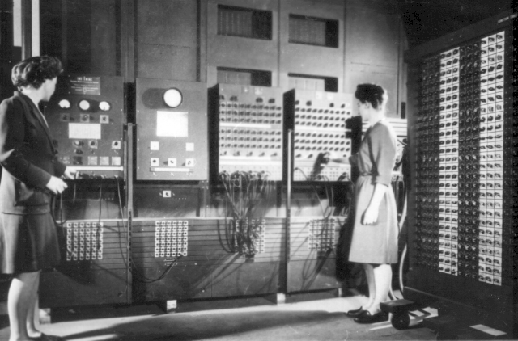
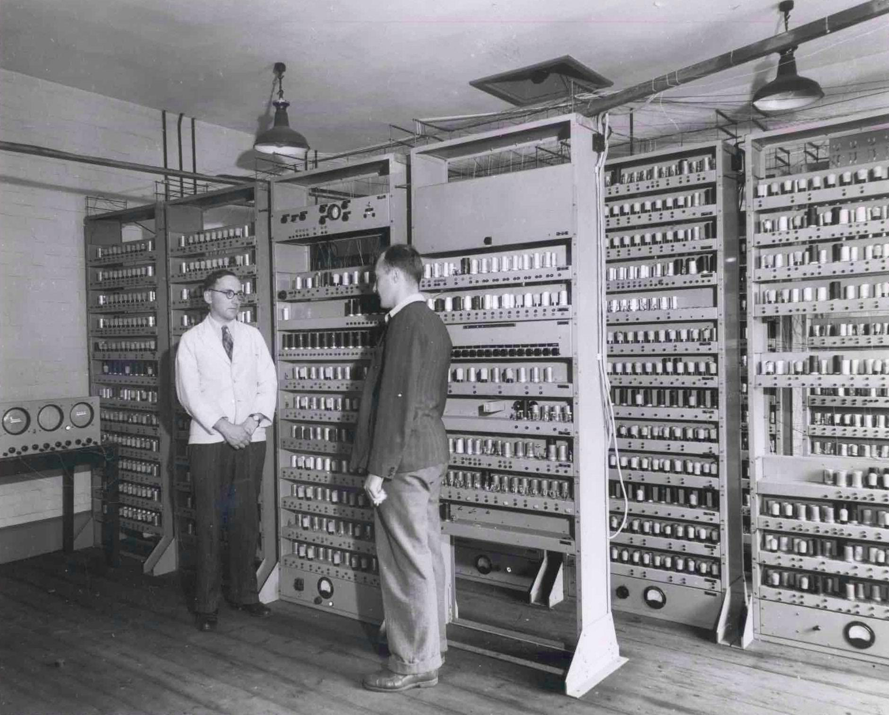
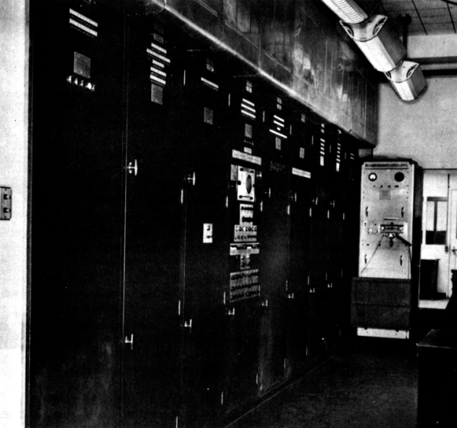
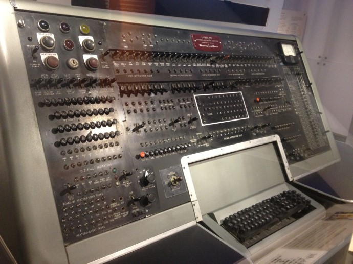

|  |  |  |  |
| 1946년: 에니악 개발- 최초의 전자식 컴퓨터 1946년, 세계 최초로 진공관이 사용된 다용도 전자식 컴퓨터인 에니악이 탄생했다. 십진수를 사용하며, 1초에 5,000번의 가감 연산과 360번의 곱셈, 170번의 나눗셈을 수행할 수 있었다. |
1949년: 에드삭 개발- 최초의 프로그램 내장 방식 컴퓨터 윌크스는 세계 최초의 프로그램 내장 방식의 컴퓨터인 에드삭을 개발하였다. |
1950년: 에드박 개발- 이진수 사용 컴퓨터 모클리와 에커드는 에니악을 개량하여 에드박을 만들었다. 에드삭에 이어 폰 노이만이 고안한 프로그램 내장 방식을 적용하였고, 이진법을 채택하였다. |
1951년: 유니박 개발- 최초의 상업용 컴퓨터 미국의 에커드 모클리 사(현재 유니시스 사)에서 에드박을 발전시켜 최초의 상업용 컴퓨터인 유니박-I를 개발하였다. 미국의 조사 통계국에 설치하여 사용되었다. |